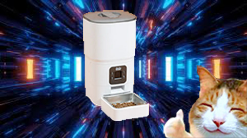

History
It all began in 2010 with a dream, a llama, and an incident involving a trampoline. Our founder, Kira, had a vision of creating a space for pet lovers after their beloved llama, Gerald, accidentally launched himself into the neighbor's yard, becoming a local legend. Inspired by Gerald's boundless spirit (and surprising vertical leap), Kira decided it was time to celebrate all creatures great, small, and occasionally absurd.
In 2012, we gained momentum when our first-ever employee, a goldfish named Captain Bubbles, “made waves” by designing our original logo. While skeptics questioned the practicality of hiring a fish, Captain Bubbles had an eye for design unmatched by any human—literally, because he was working from a bowl.
By 2015, PetPals was thriving, thanks in part to the efforts of Reginald, a particularly business-savvy emu. Reginald spearheaded our expansion into content creation, dictating marketing strategies via Morse code delivered through rhythmic pecking. It was unorthodox, but no one could deny his results.
The real turning point came in 2018, when we launched our “Squad Goals” campaign featuring our unlikely mascot: Steve, a charismatic axolotl. Steve's charm captivated audiences worldwide, and he quickly became the face of our platform, appearing on everything from T-shirts to motivational posters. (You haven't lived until you've read “Keep Swimming” in Comic Sans.)
Of course, there have been challenges. In 2021, a rogue herd of fainting goats—angry about our lack of goat-specific articles—stormed our headquarters. Negotiations were tense, but we reached an agreement after promising a monthly goat feature.
Today, PetPals stands as a beacon for all pet enthusiasts, no matter how unconventional their companions may be. Llamas, goldfish, emus, axolotls, fainting goats—we love them all, and we're here to celebrate the wonderfully weird world of pets.
Introducing the magical food dispenser
Are you tired of early morning wake-up calls from a hungry cat or a dog giving you the puppy eyes right as you're about to leave for work? Meet The Magical Pet Feeder, the automatic pet food dispenser that keeps your furry friend fed, happy, and on schedule—whether you're home or not.
With programmable feeding times, portion control, and a sleek, pet-proof design, this dispenser ensures your pet gets the right amount of food, right on time, every time. No more guilt about late meals, overfeeding, or scrambling to keep up with your busy life. It's like having a personal chef for your pet, minus the judgmental looks.
Simple, reliable, and built to last—The Magical Pet feeder is the smart way to keep your pet's tail wagging (or your cat mildly impressed). Because a fed pet is a happy pet—and a happy pet means a happy you.
